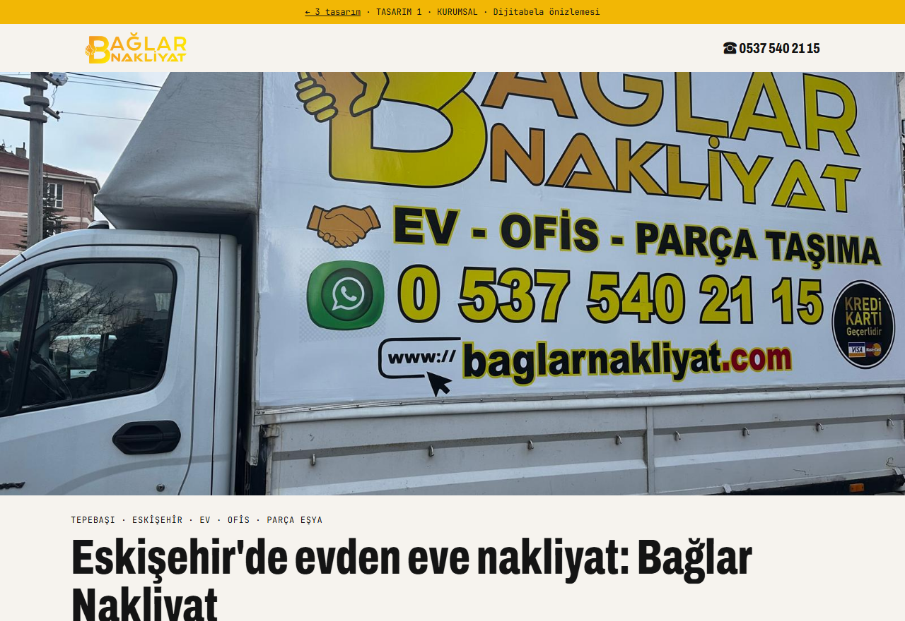
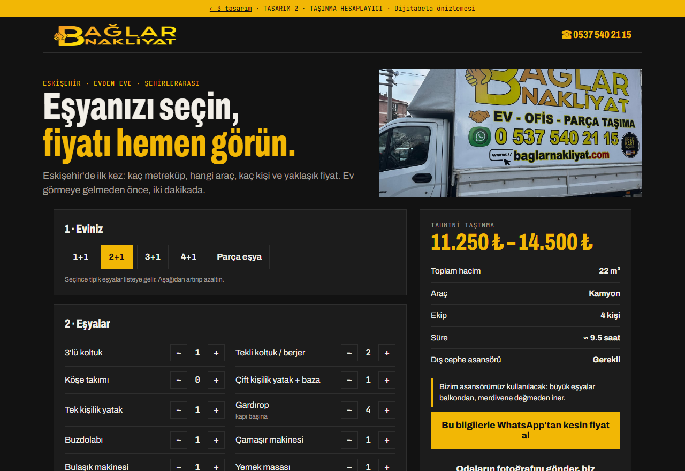
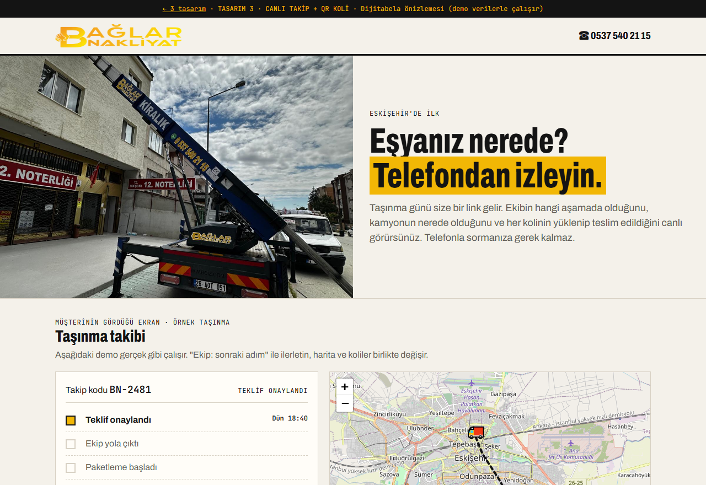

1 · Tasarımınızı seçin

① Kurumsal
Açık zemin, araçlarınızın ve asansörünüzün gerçek fotoğrafları. Güven veren, sade, her yaşa hitap eden.
- Asansör gerekir mi? 10 saniyelik kontrol
- 2 dakikada fiyat formu → WhatsApp
- Harita, adres, tek telefon

② Taşınma Hesaplayıcı
Koyu zemin, sarı vurgu. Sitenin kalbi bir hesaplayıcı: müşteri eşyasını seçer, fiyatı hemen görür.
- Eşya seç → m³, araç, ekip, süre, fiyat aralığı
- Ay sonu yoğunluk uyarısı
- Fotoğrafla ön fiyat

③ Canlı Takip + QR Koli
Müşteriniz taşınma günü eşyasının nerede olduğunu telefondan izler. Her koli QR'lı, listede aranır.
- Aşama aşama canlı takip + harita
- QR'lı koli listesi, oda renkli etiket
- Teslim onayı ve yorum isteği
2 · Üç tasarımda da olanlar
- Tek telefon, tek adresSitede, Haritalar'da ve araçlarda aynı bilgi.
- WhatsApp'a hazır mesajMüşteri formu doldurur, mesaj sizin WhatsApp'ınıza bilgileriyle düşer.
- Gerçek fotoğraflarınızStok görsel yok. Kendi aracınız, asansörünüz, ambalajınız.
- Telefonda tek dokunuşla aramaEkranın altında her zaman "Ara" ve "WhatsApp".
- Hizmet bölgeleriTepebaşı, Odunpazarı, tüm Eskişehir ve şehirlerarası sayfaları.
- Google'a uygun altyapıHaritalar kaydınızla birlikte çalışacak şekilde kurulur.
3 · Paketler
Haritalar Kurtarma
- Haritalar kaydı kalıcı olarak sizin adınıza
- Telefon, saat, hizmetler, fotoğraflar eksiksiz
- Tek telefon, tek site düzeni
- Yorum toplama QR'ı
- Aylık kayıt takibi
Kurtarma + Yeni Site
- Haritalar Kurtarma'daki her şey
- Seçtiğiniz tasarımla yeni site
- Taşınma hesaplayıcı + asansör kontrolü
- Eski siteden yeni siteye geçiş
- Alan adı ve hosting 1 yıl dahil
Nakliyat Platformu
- Kurtarma + Yeni Site'deki her şey
- Müşteriye canlı taşınma takibi
- QR'lı koli etiketi ve listesi
- Teklif ve müşteri paneli
- Otomatik yorum isteği, WhatsApp asistanı
Fiyatları ve sürecin adımlarını 10 dakikalık bir görüşmede anlatıyoruz. Ödeme yarısı başta, yarısı teslimde. Site ve tüm hesaplar sizin adınıza açılır. Hesaplayıcıdaki fiyatlar örnektir, sizin tarifenizle doldurulur.